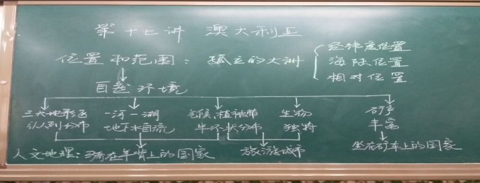

2021/6/21 17:10:14
石家庄市第三十五中学
第23届“同奖普通话 携手进小康”活动总结
金秋九月，我们迎来了全国第23届推广普通话宣传周，本届推普周的主题是“同讲普通话，携手进小康”。
语言是最重要的交际工具和信息载体。学校作为社会精神文明发展的领头军，更应该重视普通话的推广和普及。《教师法》规定：“普通话是教师的职业语言”、“能用普通话进行教学是合格教师的必备条件之一”。在学校推广普通话，加强校园精神文明建设，提升师生的语言素质和综合人文素质刻不容缓。
一、活动目的
1、通过宣传，使全校师生认识到推广普通话对提高自身素质，实现顺畅交流，以及为现代化建设营造良好语言环境的重要意义。
2、通过培训，提高全体师生的普通话水平，增强自觉使用普通话的意识。
3、通过开展活动，使广大师生充分感受祖国的语言美，营造良好的语言环境，让生活更精彩，让社会更温馨。
二、具体安排
（一）教师方面
1、学校要求，所有任课教师上课时必须使用普通话授课，不会普通话的教师要尽量放慢语速，保证全体学生能听懂；全校所有教职员工与学生交谈时要尽量使用普通话，将普通话作为工作语言。
2、学校将对全体教职员工进行普通话培训，全体教职员工在工作场所必须坚持练习使用普通话，促进普通话水平的提高。
3、各教研室要利用教研活动的业务学习时间，有针对性地开展普通话培训。每个教研室选取一位普通话水平较高的老师担任本教研室普通话指导老师，负责本教研室推广普通话工作的辅导和监督，针对本教研室老师说普通话中存在的问题逐一解决。
4、学校将把推广普通话工作纳入日常检查，在全校范围营造讲普通话的良好氛围。

（二）学生方面
1、高一年级组织师生开展了“书写经典”规范汉字比赛，师生们或钢笔或水笔，或稚嫩或成熟的展示着各自的风采，一张张散发着墨香的参赛作品，引来了师生细细的欣赏。
2、
高二年级开展了两项活动。第一项活动是组织全体师生开展“书写经典”的活动。每个班每个同学都认真的书写中华优秀传统诗歌或者是老师推荐的学习强国上的经典篇章。第二项活动是高二年级学生利用早读的时间由老师带领诵读《逍遥游》、《归去来兮辞》、《陈情表》等。琅琅的读书声响彻校园，学生们诵出了经典，诵出了味道。
4.每班选取五份优秀作品，年级组集体评选出一二三等奖。利用周一升旗国旗活动，公布获奖名单，激发学生书写兴趣，及规范书写的热情。通过张贴作品，将知识性与观赏性有机统一。
在学校师生的共同努力、共同配合下，通过“写”“诵”“宣”“评”“查”等方式，推普周活动圆满地取得了成功。“同讲普通话 携手进小康”在师生心里扎下了根，普通话也就理所当然的成为了教师言传身教的常用语言。我校也将以每次推普周活动为契机，继续加大宣传力度和监督力度，经常性地开展一些有益的活动，使学校推普工作走上长期、有效的途径。
2020
年
9
月
21
日

版权所有@石家庄市第三十五中学（石家庄美术职业学校）| 地址：石家庄市明珠路18号 电话：0311-87894108 0311-87031067 | 冀ICP备 16023227号
学校邮箱: sjzmszyxx@126.com 校长信箱：sjzmzshang@126.com